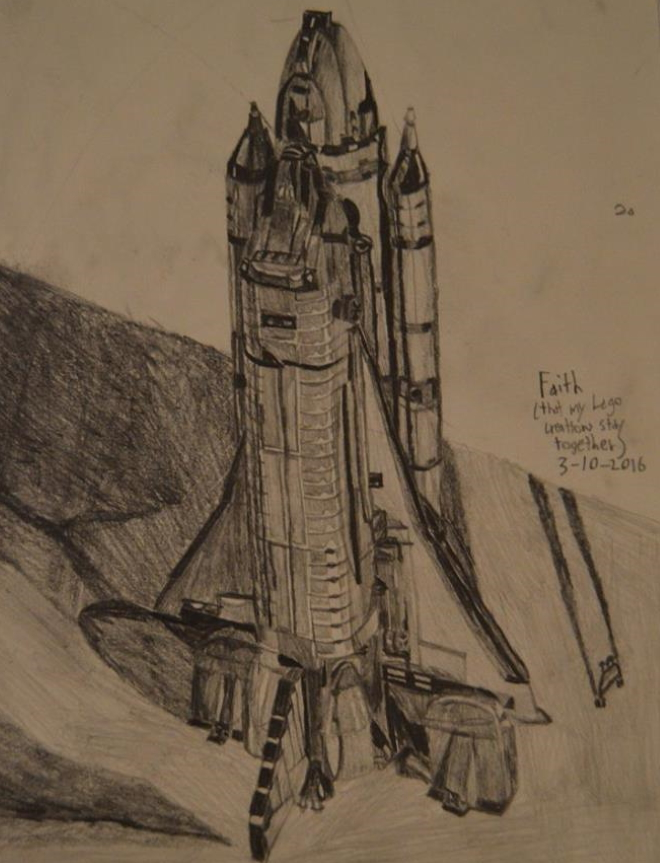

Things I should add: Squish the Conqueror (math adventure game), Orion Tale (space Oregon Trail clone), The Verti-Walker (patent pending), Fresnel lens H2O purifier (no practicality expressed), classical mechanics calculator (now with no calculus), arbitrary matrix/system solver (a deep dive into windows.h - beware), transcribed sampled music box w/ synthesizers (actually a box), a robot with meat cleavers which almost fits into corners to pick things up, bowtie Christmas tree, a mug memorializing the Gaussian integral, Borderline animations
To divert water away from my downspout and prevent ponding in my yard and runoff into a driveway, I researched, measured, designed, procured, dug, placed, and tested a french drain system. The project ultimately required 24 hours of manual labor.
A downspout could be extended with a simple shallow PVC pipe but to prevent ponding elsewhere, I went for an entire french drain installation with perforated pipe to allow excess groundwater to drain, a gravel trench to retain water in voids, a non-woven landscaping fabric to prevent grass roots and soil runoff from clogging. I also added a catch basin to collect water from a porch and landscaping bed. Conveniently, the end of my yard drops off abruptly to just the right height to have a 1% slope on the pipe from the catch basin.
I began digging with a drain spade/sharpshooter shovel using this method but ultimately decided to use a tiller instead. Due to my rocky soil, I needed to use a hammer 8 times to remove rocks stuck on the tines.
The result:
For pi day, I decided to bake a bean pie. I began by sorting and counting the contents of a bag of beans.
So, in summary, Hurst's HamBeens Cajun 15 BEAN SOUP contains 4646 plus or minus 64 beans. The ingredients list says contains 15 of 17 listed varieties.
This batch contains 16 varieties - the two kidney varieties are combined on the ingredients list as "kidney". The two missing are yelloweye and "small white beans" which appears to be a term for the other white beans thrown in without being pre-sorted.
Errors are due to extrapolation by weighing [yellow pea and lentil have a systematic error from whiteish fragments and yellow fragments - and white kidney vs northern are hard to classify but that error doesn't change the total (it has covariance). Counts without uncertainty are exact, 0.5s are half-beans. Also split peas and lentils are called beans which the UN does not agree with - also split peas are half-peas so realistically one should halve the number.
I then picked out beans following the pattern:
3 navy
1 pinto
4 navy
1 cranberry
5 navy
9 pink
2 navy
6 small red
5 navy
3 dark kidney
5 navy
8 light kidney
9 navy
7 baby lima
9 navy
3 black
2 navy
3 white kidney
8 navy
4 northern
6 navy
2 pinto
...
until I arrived at 299 beans.
Finally, I incorporated my tediously-counted beans into a bean pie recipe .
See final review booklet for background on our class.
For a seminar proposing a virtual/augmented reality interactive artwork for the MIT Nuclear Reactor Lab, I devised an environment combining different layers of prompts requiring different perspectives of tacit knowledge in operating a nuclear physics experiment.
This box is a tangible remnant of the idea of interactions with knobs from color-coded perspectives (vaguely associated with matters of concern, health, instability, & specialized knowledge).
This is direct conversion receiver tuned for a performance art project where volunteers hold a 500ft wire in the hollow interior of a helical ramp to the MBTA Alewife Station parking garage - forming an antenna with highest gain around 5-9MHz (up to highly uncertain measurement of building).
The device has a rugged enclosure with BNC+SMA connections and a terminal block for accepting rugged 8AWG wiring (chosen so performers don't break it, also on sale at Home Depot).
After looking at designs from MIT Lincoln Labs Cantenna and the MIT Haystack SRT, I decided to use the SA602A Mixer IC with local oscillator and input/output filtering designs from the datasheet. There is a superheterodyne output in one ear and a power level (from a peak detector) synthesized (with a voltage-controlled oscillator) into an audible output in the other.
Here's a cropped schematic:
Here's a shot from the performance:
In January 2021, I was the TA for a pinball machine building class. I ultimately laser cut, 3D printed, and packaged parts for 25 kits. After tutorials on design for 3D printing, laser cutting, and vinyl cutting, we made+mailed out around 200 parts for students.
You can have a look at the assembly guide and final presentations.
I also worked on assembling 5000 14-piece engineering kits for MIT Admissions - finding efficient ways to open and tape the tops of 5000 9V batteries, extract 5000 wire strippers from clamshell packaging, and to lay out an assembly line - and personally making around half - plus pictures for the instructions.

In summer 2020, I virtually mentored a team of high schoolers in Barcelona to build a muon detector based off the Cosmic Watch project. Their initial idea was a Geiger counter, but, due to safety concerns, I reduced the maximum voltage being handled from 600V to ~25V
Here is a Zoom screenhot of our first hint of evidence that the circuit was amplifying and extending pulses - and that they occurred at about the proper rate for the volume of scintillator.
Here is the basic schematic poorly cropped:
Before the pandemic, I learned to use a Cricut Maker by cutting our logo in different colors of iron-on vinyl before aligning and applying to shirts for all of our mentors. I also used a Brother CNC embroidery machine to put our names on them - along with testing Ink/Stitch for more complex shapes.
For my photography class, I began taking photos exploring the city with a hobby horse I named Coconut after Monty Python and the Holy Grail. This continued my anthropological exploration of companion species and fit into the larger Boston Metropolitan Trail project with fellow academics. Read all about my project in this expanding booklet.
I go on long (8-27mi) walks to observe the urban landscape in very performative ways. One may even call it an aesthetic practice. Elsewhere I may eventually post some writing on the subject. I have a compilation here.
While at MIT, I set out to walk 1000 miles before graduation - a task I completed.
An interactive map is available here.
Once MIT went virtual, 8.14 Experimental Physics II replaced the exploratory project with modern data analysis. My partner and I chose to work on the mystery of why jets observed in opposite directions emitted in relativistic heavy ion collisions happen to have very different momenta.
Follow along with our Poster .
A number of models suggest this energy loss can be explained simply by the lengths at which each interacts through the quark-gluon plasma left behind. To test this hypothesis, one simulates Fermi-distributed circles with expected collision cross-sections colliding in order to calculate length anti-correlations. (I was also learning python for this, and my inefficient code couldn't handle the non-intersecting criterion used in most Glauber models so our distribution more clustered).
For each of our screened non-interacting jet pairs from PYTHIA, we choose a length pair based on the ATLAS centrality interval, and apply our energy loss. Then, after more screening, we look at the histogram of momentum ratios and the nuclear modification factor (ratio of lead jets to proton jets in a given energy bin - used to ensure energy loss is physical). We want to choose parameters and models that minimize the peak in the first histogram and maintain the flat ~0.5 ratio in the second as observed by ATLAS.
Something interesting occurs through pre-screening PYTHIA jets - which is that before interaction, they are more symmetric in energy than protons which we noticed the day before presentation.
Anyway, methods of statistically selecting energy loss, including a ratio of gluon creations between gluon and quark jets, and even branching momentum out then applying energy loss to the remaining lengths fail to produce the expected peak.
It is clear our minimization was not "robust" enough to handle the number of stochastic inputs (if applied energy loss is chosen around mean value calculated from parameters, one can easily step into low-statistics region; quantization sensitivities if branching from selecting whole number of branches).
Overall, our main insight was that purely deterministic path-length dependence is insufficient just as others have demonstrated.
I participated in the Borderline mural project in the tunnels under MIT. Though I never submitted a proposed design, I volunteered to help paint 3 murals and to animate another.
Sarah Dohadwala - Blending In (helped paint Fall 2017)

Ivy Lee - Untitled (animated Fall 2018 - presumably use the Artivive App)
Raphi "with a Ph but eventually a PhD" King - Precious (helped paint Fall 2019)
Olga Medrano Martin del Campo - Ella puede soñar, y tú también! (helped paint Fall 2019)
Building off the themes Interspecies Communication and the Anthropocene, Brandeised is dialogue between historic case law and modern laundry tracking technology. Additionaly, the project was traced as a scientific investigation with the laboratory notebook shown alongside the piece. My pamphlet description is copied below.
In 1908, Louis D. Brandeis, an overachieving Harvard Law graduate, delivered the first dossier of scientific evidence to the Supreme Court of the United States. In this case, Muller v. Oregon, a woman’s employer had been fined for making her work more than 10 hours – all due to a load of laundry. Brandeis argued to uphold the state’s fine based on scientific consensus about a woman’s physical abilities and role in society. The resulting decision marks an early attempt to regulate labor and move past the desire for ever increasing work in the industrialized world – all with morally questionable flaws.
To fulfill the modern desire for efficiency, we have faced a number of ironies – none more apparent than the desire to launder our surroundings by pushing waste somewhere else.
More alarmingly, we continue to facialize our world in a particular way. We see scientists and engineers on a journey towards infinite efficiency as we are presented with well-curated displays of progress rather than the haphazard laboratories behind. Worse, the most hidden of laboratories are in the early stages of tracking new critical zones – investigating runaway effects so that others may design a solution.
So when does the face of a critical system become an extension of our species and our problem? The answer may continue from our scientific fantasy – when it achieves for us like a monkey in orbit or is surviving a crisis where corporations may appear to intervene like ducks in an oil spill. At most other times, the artist holds the role of spreading concern.
Like Brandeis, our critical zone begins with a load of laundry. In particular, we observe the phenomenon of microfiber pollution – one of many unchecked sources of ubiquitous marine plastic. In our cybernetically-controlled monitoring lab, we see the efficiency-driven publically-accessible usage of washing machines at Brandeis’s namesake university. After tracing the battered fiber remnants through the sewer system, we emulate their spread and staining of the environment by metaphoric bubbles.
This is Brandeis’s Laundry.
In January 2019, I worked on Mathematical Methods of Classical Mechanics in the Physics Directed Reading Program to explore symplectic geometry and the algebraic structure of observables and symmetries as seen in this presentation .
In January 2020, I continued with learning about the methods of Geometric Quantization, an attempt to choose a self-consistent symmetry-preserving map between classical and quantum systems which is useful for Chern-Simons theory and qubits as seen in this presentation.
For my 8.06 term paper , I decided to explore the competing form of quantization known as deformation quantization or the phase space formulation. It was arrived at by two methods: simplifying Fourier transforms to do statistical mechanics and as a quantization to symmetrically treat position and momentum operators. By exponentiation operator representations of position and momentum and canonical commutation relations, it is possible to represent a dynamics using a distribution in the classical phase space rather than a representation of a Hilbert space given a representation of the quantized operators. The only requirement to do so is to deform the one-to-one correspondence of classical and quantum symmetries. The Wigner-Weyl transform is one method of doing so though others are used such as that by Roy Glauber to describe coherent states.
For a class on color, I focused onto relativist models of perception and ways like Munsell of defining a scientific understanding. My method involves a splatter-painting robot whose intentionally manipulated distributions are analyzed in a scientific paper and presented as a natural history museum display merging curatorial practices of art and science.
Here are various forms of presentation explored:
Over IAP, I participated in the Suffolk County House of Corrections Prison Mural Painting Project in which 10 MIT students and 10 female prisoners enrolled in pastel/oil classes with either less than one year sentences remaining or in ICE custody came together to turn a multipurpose space into a studio resulting in this collaborative (and later augmented-reality upgraded) mural.
Our first article.I have made on the order of 20 cheese boards for art club parties, fused glass workshops, and general meetings with advisees over the years. I'm not necessarily a cheesemonger and am generally limited to the stock at Star Market - though I have gone to the MA Cheese Festival. For a guide based on my experience, see the guide I wrote for an anthropology course about craft.
At one point I noticed an abundance of cereals being released which have no reason to exist - simply look at recent years in the Cereal Timeline .
To keep track of these, I began a collection along with a Spreadsheet of my unscientific ratings. This expanded into an attempt to find correlations between base grain, percent sugar, price, and rating.
Ultimately, only qualitative conclusions can be made: I dislike corn and sugar has minimal impact unless over 40 percent - at which point the product is usually designed to mimic a sugary snack.
Steel, Dream-Catcher
4.301 Themes: Daemon, Body Extension. A model of how decisions control behavior and desire to resist change.
On the avionics team, I worked on developing firmware in C++ using an extended Kalman filter to combine sensor values and an expected flight profile for "sensor fusion".
For an FAA Class 3 waiver, one must provide a map around the launch site confidence intervals where a rocket is expected to land with functioning/non-functioning parachutes, different wind conditions, and other factors such as launch angle. Typically, the workflow was to take motor data from BurnSim and aerodynamic profiles from RASAero and place them into a proprietary $1000 program to generate these graphs. Previously, an entire VM was used to run a Flask server to modify files and run them in OpenRocket. To replace this, I created a context menu to set mean & standard deviation for parameters, then run arbitrarily many (memory-limited) simulations with results appended to a csv file.
As with all Rocket Team members, I developed my clone of Andrew Reilley's L1 Rocket (LOC-precision stock parts and laser-cut centering rings/fins simulated in OpenRocket). The following month, I produced another in under 2 hours. And the following year, I co-led the team build session.
When Andrew graduated, we replaced him with a character named Onion Andrew based on Homestar Runner character Onion Bubs. Eventually, in 2022, an iteration of Onion Andrew came into my possession and began rotting so I turned him into a rocket
Annual Animatronic Ugly Christms Sweater
Based on Swedish goat famous for arson attempts.
White Chocolate & Worms
4.301 Spring 2018 Final Project with Erika Mynio & Peter Duff
I put off uploading this until I could explain it to my mom.
"Some of the best work I've ever seen come out of an intro art class" - reviewer
Glass, Mirror Acrylic
4.322 - Final Project with precursors
A Montessori-style board game designed to pedagogically emulate rules of manipulating propagators in particle physics.
These engraved rules were adapted from the rules of Feynman diagrams with design considerations from K. Salen and E. Zimmerman, Rules of Play (2014). For example, a cybernetic balance of negative and positive feedback systems (like chutes and ladders) is attempted.
Found material samples
4.322 Box Object - Explores creation of modular environments around objects
Glass & Ceramic
4.322 Midterm Project - Explores creation of modular environments around objects specifically between well-defined particles and background fields
I've worked on 12 collaborative window painting projects in high school, usually for local competitions or local businesses around Halloween/Christmas switching roles from designer to paint mixer to painter.
A standard local business Christmas Display (Nov 2016)
My first event (Sept 2015)
Annual Halloween contest (Oct 2015)Rustic winter theme for country store (Nov 2015)
Candyland theme by me, Christmas contest (Nov 2015)
Dairy Queen winter commission (Dec 2015)

Annual Halloween contest (Oct 2016)
Local Car Dealership (Nov 2016)
Local Candy Shop & Creamery (Apr 2017)
Collaborators: Deanna Arnone, Kaley Murray, Ryan Kniss, Shalee Alison, Alyssa Avery, Sarah Houston, Rianna Learn, Emma Learn, Oliver Lindrose, Chris Houston, Mariah Lonergan, Katelyn Carnell, Dana Holliday, Autumn Hause, and more.Entry for PA-TSA Robotics with Jon Brown, Devin Fisher, Chase Toth. This is the only time I actually built a robot and as such it doesn't have a good name. It was finished at the last minute and no testing was done in the final field so it got stuck in the corner unable to pick up balls but it was still in the top 10 due to documentation.
A not-very-feasible idea for an entry for TSA Engineering Design - but I don't come up with ideas only implement and document them - so we decided to build a water purification system that involves directing sunlight to boil water then collecting the condensed vapor.
This entry for TSA Children's Stories was about a bird learning to fly. You can go read it here.
Entry for SciVis with Jon Brown, Devin Fisher, Bobby Murtha in which I explain the quantum properties of magnets.
A victim of Digital Obsolescence (it only exists on a DVD I cannot read)
Entry for Energy Sources with Jon Brown, Chase Toth in which I explain nuclear energy statistics.
A victim of Digital Obsolescence (it only exists on a DVD I cannot read)
Wire Sculpture
Featured in Greater Johnstown Young Artists Exhibit 2017 Realism approach to 3D wire sculpting. Only took 17 hours from reference image.
For my freshman advising seminar, a team of Talia Blum, Erica Chiu, Anna Kooperberg, and I sought to construct an interactive kinetic art project. Ultimately, we ended up with a flower that opens and changes colors as you approach it using an IR sensor, rack gear, mechanical plastic connections, and, of course, an Arduino with hand-made interface board. Talia and I were the associate advisors the following year.
A video from before fixing feedback
The state 2 years later
Detail of fused/slumped glass panels. I was the first in HS to try our glass-fusing techniques. Since then, I've run 3 workshops in the MIT Edgerton Center while learning more techniques.
Mixed Media (Ceramic, Glass, Wire, Fountain)
My final HS art project. Rather self-explanatory. The water was hard to control so now it's an outdoor fountain
Since you scrolled down, I'll give you some more details. My art teacher had purchased materials for fusing glass which sat for months with nobody attempting to use it. After testing with some simple details, I realized organic shapes carried over best and decided on a wet outdoor aesthetic. I realized that glass would allow a fountain to look more unteresting than my solid ceramic one in the past. I was also in a wire-sculpting phase so that forms the main structure.
Wire Sculpture
Senior Project was to make something based on favorite required reading in HS. The silhouette was actually cast onto 3 panels from an actual lamp rather than a flashlight. It demonstrates many "parallels" and themes in the book...
Annual Animatronic Ugly Christms Sweater
Based on the Flying Spaghetti Monster's noodly appendages and meatballs, uses MSP430 and servos
An Arduino-controlled wire sculpture. Every 30 seconds, the eyes start blinking rapidly until settling on the left eye, the right eye, or a superposition.
Ceramic
My mom always wanted me to make her a fountain and I'm the only one doing "well", so I decided to build a well. This, the roof, holds a normalized inverse Fourier transform of a Fourier transform in the QM convention. The base has the time independent Schrödinger / Energy Eigenvalue Equation embedded on it.
Created in a Competitive STEM class with Brady Baker, Cassidy DiPaola, Devin Fisher, Jacob Horsley, and Dan Verhovsek, the Verti-Walker is a walker with a retractable stair mode that can lift back to full height using gas springs.
This was design was entered into the PA Governor's STEM Competition and won at the Intermediate Unit 8 regional competition continuing to the state level.
It was also entered for the PA-TSA engineering design competition.
Full details are in the project brief .
We then showcased it in the summer at a local business ideas event.
(Made with Jon Brown, Isaiah Magliocca)
Made in GameMaker 8.1 Lite
You are a stick who must solve math problems by jumping through portals (which, inspired my Minecraft, glow purple)
- includes animations, transitions, a very bad movement system (up/down/left/right apply an instantaneous impulse but not if another button is pressed, gravity is very strong)
- includes original soundtrack
(Made with Jon Brown, Logan Rickley)
Made in GameMaker 8.1 (Exists on a DVD that I no longer have a drive to read; and as a .gm81 file for which I can open and take some development screenshots but do not have a Standard license to re-compile; GameMaker:Studio 1.0 no longer allows logging in; and GameMaker:Studio 2 cannot open .gm81 files.)
You are a stick who must solve math problems by jumping through portals (which now glow green)
- implemented scrolling platformer with out-of-bounds area, tilesets, began using scripts under step/draw events rather than built-in drag/drop functions
- includes another original soundtrack
(10th place PA-TSA Video Game Design; Made with Jon Brown, Matthew Mantini - storyline, Rory Beebout, Chase Toth)
Written in C++ using SFML 2.1 for graphics
A blob named Squish is tasked by his grandfather to take over the world. He must solve math problems to eat the correct blobs/ants/mice to grow.
- includes another original soundtrack
- Better graphics, cloud animation, hints
- implemented state machine architecture and dynamic memory management
(Made with Jon Brown, Braidon Lape)
Made in GameMaker:Studio 1.4 mostly implemented in scripts
Earn money for your space program by taking on contracts
1. Escape Atmospheric Resistance using Probe-Originated Kinetic Energy TESTing (EARPOKETEST) = play breakout but you're demonstrating the Air Pressure Pump Leveling Experiment (APPLE) on clouds and make money for each impact and lose money for each device you lose
2. Resisting Enduring and Loosely Redirecting Asteroids Technical Showcase (REALRATS) = dodge asteroids but you can launch probes upwards for a cost that can be recovered for each asteroid it collects
3. Retake Our Base On Comet Orbitz-Pzykatil IV (ROBOCOPIV) = dodge randomized asteroids and laser-shooting rovers while navigating a platformer to reach a door, paying for repairs
4. Open Up and ReMove Our Security System (OURMOSS) = dodge randomized asteroids and player-targeting laser-shooting rovers to reach security system panels, paying for repairs
Choice of rocket parts in beginning does impact movement speeds and thus gameplay strategy
- implemented randomized npc employees, mission screens, particles, dynamic loading screens, AI targeting
- includes another original soundtrack
(9th place PA-TSA Video Game Design; Made with Jon Brown, Rory Beebout)
Made in GameMaker:Studio 1.4 mostly implemented in scripts
You are 4 astronauts on a space mission who must:
1. collect supplies dodging security guards who attack when alerted
2. dodge aliens while descending platformer level using fuel to collect supplies
3. collect supplies avoiding guards while playing breakout on other half of screen to spawn guards/supplies/explosions and reveal security system
4. dodge aliens while descending platformer level using fuel to disable systems
and also dodge asteroid fields between levels, using resources to increase speed and noting that food resources are used up over time
- implemented UI overlay with health indicators, inventory, buttons, map; levels start paused to read mission; randomly named characters; more random asteroids (location, velocity, color)
- includes another original soundtrack
Pen/Ink
When commissioned for a piece for our Pictures at an Exhibition showcase for Fall Fine Arts Day, I chose the French garden with children quarreling at play as I enjoy French culture, having read a number of novels and biographies set in late 1 8th century France. Hence the color scheme. I did continue traditions of art nouveau in repeating patterns natural features. I also paid close attention to the architecture while abstracting away the more intricate sectionsThe Tuileries
This recursive acronym which I built so my friend, Matt Popovnak, could cross "build a CNC machine" off his bucket list. The idea of linear of motion was easy to attain and so was mechanical construction. Reverse engineering the drifted PWM motor logic and driving took the most time. The system plots from a set of points to a resolution of 256x256 based not on stepper motors on encoders but on time. It begins with a calibration step measuring time from the origin to limit switches and back. Drift based on battery level causes significant error over time, resulting in offset drawings.
For this weekly sketch book, I chose to focus on the fine details of my antique pencil sharpener collection. This piece features one of the widest ranges of value I have achieved.
For this sketchbook, I interpreted faith as that in ensuring my Lego space shuttle does not break while I draw it. For some reason, I though trying to accent regular patterns would be easier than abnormal ones, but instead mistakes are easier to see. Here, I mainly focused on proper relative perspective geometry. I'm not necessarily pursuing space exploration, but I've had this collecting dust in my room for years.
This was the first in a steak of Pop-Art influenced drawings.
Acrylic on Canvas
Just a normal picture of me adorning an umbrella hat and bowtie.
Copper Enameling, Nickel
My only attempt at jewelry and the closest object to something I would wear as memorializing the wavefunction.
Acrylic on Paper
On the first day of calculus, the teacher showed a magic square algorithm and a few examples students had made up to 57 x 57 all by students named Matt. Since Matt wasn't trying, I decided to work on a 63x63 one in Art Club. I decided to color in numbers of interest found via a C++ program I wrote: primes, twin primes, perfect squares, and powers of numbers who have more than one appearing.
Pen/Ink
Featured in Greater Johnstown Young Artists Exhibit 2016
In the style of art nouveau, I attempted to abstract away the details of the intricate mantis shrimp, part of my pseudonym indicating an eclectic view, using curvilinear forms and emphasis of details (eyes compared to segments). I experimented with the idea of stippling across a symmetric border to draw attention to the contrast between a bright organism and its environment analogous to an underwater and "desert" setting. As a result, the floral forms were chosen near those appearing in both. The border was added to enclose each environment. There is no up.
Stained Glass
I like grilled cheese. Tasty selenium patina.
Best-in-Show gingerbread house made collaboratively my senior year. Using these techniques, I've baked a few gingerbread houses such as one of my dorm.
Collaborators: Ryan Kniss, Rianna Learn, Emma Learn, Oliver Lindrose, Rylee Poling
Annual Animatronic Ugly Christms Sweater
Big Mouth Billy Bass wall fish reprogrammed to swing and sing Christmas songs
Mixed Media
Featured in Greater Johnstown Young Artists Exhibit 2015
Allied Artists of Johnstown Achievement Award
After a summer of teaching myself calculus, mechanics, and E&M, I needed to channel my interests into something. So I chose my Crafts I stripbuild pot. Yes, I enjoyed electronics, placing real components and proudly displaying Maxwell's equations on the front. I did not test the glazes, so the 1 k ohm resistors do not appear to be so. (My favorite 330ohm are fine.)
Rice Paper Batik
Featured at MIT Campus Preview Weekend
Because of snow and an unexpected artist in residence, I had 3 days to complete this project in class. After repeating a cut paper design and transferring it into the bounds of a freehanded seahorse, I began applying the wax. When the fountain pen tipped, I managed to spill out a "sea spirit" on the right. It's good to know I'm haunted. Anyway, I became carried away with realism, as usual, adding a background with schools of fish and the sun.
Entry for PA-TSA Electronic Research & Experimentation
This music box combined synthesizers and pre-programmed hits such as:
Take Me Out To The Ballgame
Oh My Darling, Clementine
Korobeiniki/Tetris Theme
Battle Hymn of the Republic
Yankee Doodle
and the Ievan Polka
- I hand-transcribed sheet music to durations and "numbered keys on a piano" [correcting for key signatures] which are actively converted to PWM frequencies
- a bar graph would light up corresponding to the pitch being played
- one could switch off/on the synthesizers and pre-programmed songs
- the audio output uses a separate power supply
- some bits are soldered to a perfboard
- do not look too closely at this schematic
Wood, Nails, Acrylic
Upon acquiring my 9th bowtie, I realized their loose ends called for a compact storage location, so I set out to manufacture a custom solution to hang with my clothes and allow me to store even more, so I did. I now have 36 but can only fit 12 so now it holds greeting cards.
Ornaments of my dogs. The latest turened out well given I went 7 years without touching my wood burning iron.
Drawing
Featured in Greater Johnstown Young Artists Exhibit 2014
When instructed to produce a fivepoint perspective piece, my first instinct was a colony of bacteria under a microscope lens, however I had no idea the roles they would lead in their society, so I rose an order of magnitude and decided to place orders of magnitude arbitrarily branching out of each other.
Ceramic Pieces (9th grade mug, 5th or 6th grade stump person, 8th grade fish, 4th? grade "pinchpot" person, 7th grade alien whistle, 3rd? grade "bowl")
First book report (1st? grade)
Name in block lettering, perspective (circa 5th grade)
Patriotic wicker basket (circa 5th grade)
Pig soap ornament (6th grade)
Landscape (5th grade)
Cityscape (8th grade)
In the boredom of 8th grade while learning about redstone computers in Minecraft and basic CPU architecture, I drew this design in my notebook along with other technical scribbles.
I've collected some of them here. I doodled these in my free time and even published on in the school newspaper (which was a once-a-year publication from the Gifted Support class). There are 90 but I'm self-conscious of my dumb jokes, cultural parodies, and gratuitous violence so here's a few that demonstrate my pondering of tunnels and humor.
I've collected all of these here. They including interesting references to local road names and signs - and some interesting takes on road and exit numbering, urban development patterns, and intersection design (the 6-leaf clover).
I've collected all of these here. They include me latching onto technical aesthetics with a focus on tunnels, labels, compartments, supports, stairs, conduits, assemblies, inventories, and some obscure signifier development.
I've collected all of these here. These were made in preschool through kindergarten. They include me latching on to aspects like vehicles with wheels, engines, doors, keys, balance, a face/sun motif in the corner, struts/supports, and drawing the boundary of the paper.
I've collected all of these here. I was guided through making these during my time in daycare at the Richland Learning Center. I was there for two years so that explains the repeated craft projects. Perhaps this is useful to an anthropologist.